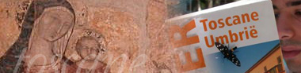

Twee weekjes Toscane
woensdag 21 juli 2004 | Reisverhalen

woensdag 21 juli 2004 | Reisverhalen

Michaël De Graeve op 7 augustus 2004
Mja, de eerste twee fotopagina's zijn de moeite. De andere drie daarentegen... Je hebt toch geen 5 dagen aan 't strand gelegen? Luiaard! :-)
Michaël De Graeve op 22 juli 2004
't Is waarschijnlijk de 147ste keer dat ik het zeg, maar toch: ik ben stikjaloers!
Kom niet terug met minder dan 500 foto's eh.